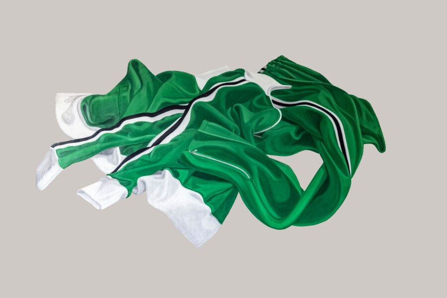

Lois Baron: REAL ILLUSIONS
At age 90, artist Lois Baron revisits the work that first brought her recognition in New York City during the early years of her career. Real Illusions presents Baron’s cut-out paintings of clothing—highly illusionistic images mounted flush to the wall so that they appear painted directly onto its surface. These large-scale works hover between flatness and dimensionality, shifting visually between image and object.
Baron began receiving critical attention with her first group exhibition in 1974, reviewed by John Perreault in The Village Voice. Her work was subsequently reviewed by notable critics including Peter Frank and Gerrit Henry (Art News), Lawrence Alloway (The Nation), and Carla Sanders and Ellen Lubell (WOMANART).
In 1982, Baron moved to Bangkok, Thailand when her husband accepted a professional position there. That same year she presented a solo exhibition at the Bhirasri Institute of Modern Art titled Postcards from Africa, based on a six-week trip through five African countries connected to her husband’s work.
While living in Bangkok, Baron continued exhibiting and received coverage in both Thai and English-language newspapers. She also curated exhibitions of Thai artists at the Rotunda Gallery of the English-language library.
Returning to New York alone in 1985 following her separation, Baron found herself responsible for fully supporting herself and was unable to maintain a studio practice for nearly three decades due to limited time and space. During this period she worked in nonprofit development and earned a Master’s degree in Nonprofit Management from The New School.
After relocating to her birthplace of Chicago in 2010, a change in circumstances allowed Baron to return to painting. Her more recent work includes still lifes and portraiture, including her exhibition Time and Identity at the Swedish American Museum in 2021.
Baron studied at the New York Studio School of Drawing, Painting and Sculpture from 1966 to 1969, primarily with Alex Katz. Other instructors included Milton Resnick, Philip Guston, Leland Bell, and Louis Finkelstein.
Compound Yellow